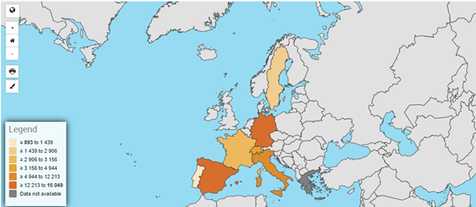
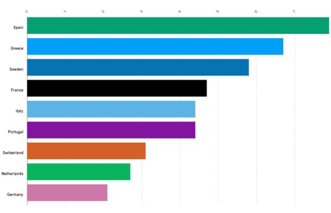

Hoy en día, las dificultades económicas a las que se enfrentan los jóvenes representan un reto importante. Este análisis se centra en examinar en profundidad estas dificultades, para ello hemos utilizado las variables que ya hemos elegido (edad, país, ingresos mensuales, emigración, desempleo...), que son las que mejor pueden influir en la economía de los jóvenes.
En este mapa podemos ver una comparación entre los salarios mensuales (2022) de algunos de los países de la Unión Europea. Estos salarios son para los menores de 30 años de cada país, para ver la raíz del problema. Observando el gráfico vemos que el salario medio de un español menor de 30 años ronda los 1500 euros. Así que la pregunta es, ¿puede un español independizarse con esta cantidad de dinero? Como podemos ver en el portal más utilizado en España para encontrar vivienda (Alquiler medio España Idealista), este alquiler asciende de media a 700 euros. Así que teniendo en cuenta alimentación, ocio, gas, luz, agua.... A un español medio menor de 30 años le cuesta casi el 50% de su sueldo sólo la vivienda. Además, en capitales de comunidades autónomas como Madrid y Barcelona este alquiler es prácticamente irreal. Por tanto, este sistema es insostenible ya que las mayores oportunidades laborales están en este tipo de ciudades.
Aquí podemos ver un gráfico de barras de la emigración juvenil en diferentes países, donde España es el segundo país con más emigración juvenil, esto se debe a la poca demanda de ciertos trabajos y sus bajos salarios, por lo que los jóvenes emigraron en busca de mejores condiciones. Como apoyo, el gráfico de la página 1, donde podemos ver claramente la gran diferencia de salarios con respecto a otros países europeos. Algunos de ellos son incluso tres veces superiores, como es el caso de Suiza y Suecia. España también es conocida por su fama de apoyar el sistema público y no el privado, destruyendo a los autónomos, por lo que muchos puestos de trabajo no existen o si existen son con salarios muy pobres debido a la cantidad de impuestos a pagar.
Este es un mapa que representa la tasa de desempleo de los jóvenes, como puedes ver España (junto con Grecia) es el país con mayor tasa de desempleo, esto favorece (como podemos ver en el gráfico de la p2) la tasa de emigración de los jóvenes del país.
Este es un gráfico de barras que muestra la tasa de desempleo total, independientemente de la edad. Comparado con el anterior, que es sólo para los jóvenes, vemos cómo esta tasa disminuye de casi el 30% a casi el 8%, poniendo de manifiesto la alta tasa de desempleo de los jóvenes en España.
Si tenemos en cuenta estas dos gráficas, el precio de la vivienda y el salario medio mensual, de los diferentes países europeos que hemos seleccionado, podemos ver muy claramente que los salarios se han mantenido prácticamente igual y el precio de la vivienda ha subido cada año, debido a la inflación. Otra cosa que podemos observar es que el precio de la vivienda más alto está en los países con el salario más alto, en cambio España no sigue esta regla, para tener un sistema estable a la hora de independizarse estas dos gráficas tendrían que ser parejas, es decir que subieran o bajaran a la vez.
Hoy en día, las dificultades económicas a las que se enfrentan los jóvenes representan un reto importante. Principalmente, el problema es la capacidad de independizarse tras finalizar sus estudios, que viene acompañada de la escasa oferta de empleo para jóvenes en este país (España), con condiciones por debajo de los precios de vivienda y alquiler. El objetivo principal y más global es identificar la causa fundamental y buscar una propuesta para mejorar las condiciones de los jóvenes, acompañada de un informe que se enviará a la administración pública, para que lo tengan en cuenta (intentando obtener una respuesta); pero otros objetivos más concretos y cuantificables serían reducir el desempleo juvenil actual en España.
Nuestros principales productos tangibles de cara al público y para visibilizar los problemas de los jóvenes serán los siguientes: Una página web donde estará disponible toda la información obtenida de los diferentes análisis de una forma mucho más visual y didáctica que el informe final, el informe final y una serie de vídeos que publicaremos en redes sociales donde llegaremos a un público más joven. Nuestro principal objetivo para conseguir el alcance deseado sería obtener una respuesta de la administración pública a nuestro informe final. Para la realización del informe hemos utilizado diferentes bases de datos de EUROSTAT (mencionadas más adelante), y las variables principales han sido: edad, país, ingresos mensuales, emigración, desempleo... Para ello, hemos realizado un análisis exhaustivo teniendo en cuenta otros países de la Unión Europea y comparando su situación. Tras realizar esta comparación utilizando el programa estadístico statgraphics, hemos obtenido diferentes conclusiones que serán las fundamentales para el informe, las cuales se desarrollarán posteriormente en el análisis de variables y en el análisis del problema. Las principales limitaciones que podemos encontrar en nuestro proyecto es la dificultad de contactar con la administración pública ya que disponemos de pocos recursos para llegar a ellos.